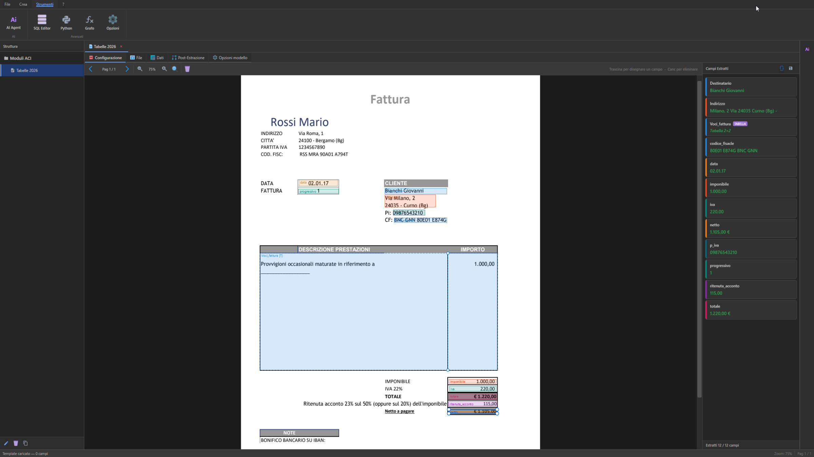

Estrai.
Selezioni i campi sul PDF di esempio. DocuMiner li riconosce in tutti gli altri.
App desktop per Windows. DocuMiner estrae i dati dai tuoi PDF e li archivia in un database locale. Niente cloud, niente upload: i dati sono tuoi e scegli tu se darli in pasto a qualcuno.
Gratis fino a 10 file · Pro senza limiti sui documenti · Funziona offline · I PDF non lasciano il tuo PC

Estrai una volta. I dati restano sul tuo computer, pronti per essere usati.
Selezioni i campi sul PDF di esempio. DocuMiner li riconosce in tutti gli altri.
Database sul tuo PC. Niente server, niente cloud, niente upload. I PDF originali non si muovono di un millimetro.
Filtri, raggruppi, calcoli totali. Con l'editor visuale o chiedendolo all'AI in italiano.
Quando ti serve, butti fuori in .xlsx o .csv. Per il gestionale, il commercialista, chiunque.
Il primo PDF richiede dieci minuti. Tutti i successivi, zero.
Apri un PDF tipo. Selezioni i campi che ti servono.
Punti la cartella. DocuMiner macina tutto in background.
I dati sono in database. Li interroghi, li manipoli, li esporti quando servono.
I dati vivono nel database sul tuo computer. Quando li devi consegnare, esporti in .xlsx o .csv — i formati che ogni gestionale, software contabile e foglio di calcolo sa leggere.
Nessuno ti chiede di cambiare i tuoi strumenti. E nessuno tocca i tuoi PDF: restano sul tuo PC, sempre.

Due strumenti per filtrare, calcolare e manipolare i dati estratti. Senza una riga di codice.
Blocchi e frecce. La logica si vede come uno schema, non come un foglio di codice.

«Totale netto per mese.» «Fatture sopra 1000 euro.» «Raggruppa per fornitore.»
L'assistente costruisce il flusso. Tu lo controlli, lo modifichi, lo lanci.
L'AI è opzionale. DocuMiner funziona perfettamente senza. Sei tu a decidere se accenderla.

Quattro mondi diversi. Lo stesso problema: dati intrappolati nei PDF.
Buste paga, F24, fatture passive: estrazione batch da intere cartelle clienti. Modelli salvati per cliente, riutilizzabili ogni mese.
Cedolini, CUD, certificazioni uniche. Estrai i dati una volta, riusali in tutti i report che ti chiedono.
Fatture fornitori, ordini, DDT. Quello che oggi finisce ricopiato a mano in Excel, domani ci arriva da solo.
Pattern ricorrenti su PDF di clienti diversi? Costruisci il flusso, lo lanci quando serve. Niente script da mantenere.
Scaricalo, costruisci il tuo primo database in dieci minuti. Windows 10/11, offline, gratis fino a 10 file. Con la Pro elabori documenti senza limiti — niente costi a pagina, niente costi a documento. Una soluzione all-in-one, una licenza sola.
Scarica per WindowsLe domande che ci fanno più spesso. Manca la tua? Aprila su GitHub.
.xlsx) o CSV. I due formati che ogni gestionale, software contabile e foglio di calcolo sa leggere.